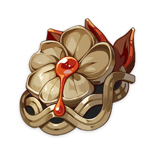

Genshin Impact · Versión 7.2
Análisis del Rol y Escalado
Neuvillette es un personaje de elemento Hydro originario de Fontaine que utiliza Catalizador y se posiciona en el tier T1.5 (A) Main DPS dentro del rol de Main DPS / Conductor Hydro de Ataque Cargado (Tier A en 7.2). Su rendimiento en combate gira en torno a este eje principal: Escala puramente con Vida% y Crítico; en 7.2 cede el Tier SS y actúa también como driver en Cargado Lunar.
Para maximizar su aporte en el equipo, la configuración prioritaria combina Escrituras del Fluir Sempiterno con el conjunto de artefactos Marechaussee Hunter (4 piezas), respetando la jerarquía de estadísticas Recarga de Energía (hasta meta) > Daño Crítico = Prob. Crítica (64% máx c/ Cazador) ≥ Vida%. y subiendo sus habilidades en orden: Ataques Normales (Cargado) >>> Habilidad Elemental (E) >= Definitiva (Q).
Mejores Armas
Opciones recomendadas ordenadas por rendimiento según el meta actual y compatibilidad con sus rotaciones:
-
 Escrituras del Fluir Sempiterno ★★★★★BiS Firma542 ATQ base, 88.2% Daño Crítico; +16% Vida, hasta +42% Daño Cargado y regenera 8 de Energía.
Escrituras del Fluir Sempiterno ★★★★★BiS Firma542 ATQ base, 88.2% Daño Crítico; +16% Vida, hasta +42% Daño Cargado y regenera 8 de Energía. -
 Jade Sacrificial ★★★★Mejor 4★ PB454 ATQ base, 36.8% Prob. Crítica; +32% Vida R1 (+64% R5) al entrar tras 5s off-field.
Jade Sacrificial ★★★★Mejor 4★ PB454 ATQ base, 36.8% Prob. Crítica; +32% Vida R1 (+64% R5) al entrar tras 5s off-field. -
 Hora de Surfear ★★★★★Alternativa 5★542 ATQ base, 88.2% Daño Crítico; +20% Vida útil incluso como stat-stick.
Hora de Surfear ★★★★★Alternativa 5★542 ATQ base, 88.2% Daño Crítico; +20% Vida útil incluso como stat-stick. -
 Oración Perdida a los Vientos Sagrados ★★★★★Alternativa 5★608 ATQ base, 33.1% Prob. Crítica; aporta Bono Elemental al mantenerse en campo.
Oración Perdida a los Vientos Sagrados ★★★★★Alternativa 5★608 ATQ base, 33.1% Prob. Crítica; aporta Bono Elemental al mantenerse en campo. -
 Prototipo Ámbar ★★★★Mejor F2P Forja510 ATQ base, 41.3% Vida%; regenera 12–18 de Energía y cura al equipo con su Q.
Prototipo Ámbar ★★★★Mejor F2P Forja510 ATQ base, 41.3% Vida%; regenera 12–18 de Energía y cura al equipo con su Q.
Mejores Sets de Artefactos
Combinaciones de 4 piezas o mezclas de 2 piezas para maximizar su contribución:
-
 Marechaussee Hunter (4 piezas) BiS Absoluto
Marechaussee Hunter (4 piezas) BiS Absoluto+15% Daño Cargado y +36% Prob. Crítica gratis con su drenaje y curación de HP.
-

Heart of Depth (4 piezas) Alternativa Clásica+15% Bono Hydro y +30% Daño Normal/Cargado tras Habilidad Elemental.
Estadísticas Principales y Secundarias
Atributos prioritarios en artefactos para un balance óptimo de daño o soporte:
| Pieza | Estadística Principal |
|---|---|
| Reloj (Arenas) | Vida% |
| Cáliz | Bono Daño Hydro / Vida% (con Furina) |
| Corona | Daño Crítico / Prob. Crítica (máx 64% base) |
Prioridad de Subestadísticas
- Recarga de Energía (hasta meta) > Daño Crítico = Prob. Crítica (64% máx c/ Cazador) ≥ Vida%.
Prioridad de Talentos
Ataques Normales (Cargado) >>> Habilidad Elemental (E) >= Definitiva (Q)
Objetivos de Estadísticas (Nivel 90)
Valores de referencia verificados para evaluar el equipamiento de Neuvillette en nivel 90 con artefactos de 5 estrellas:
| Atributo | Meta Recomendada |
|---|---|
| Vida | 35,000 – 42,000+ HP |
| Ataque | 1,100 |
| Defensa | 750 |
| Maestría Elemental | 0 – 80 ME (Lunar) |
| Recarga de Energía | 100%–115% (2 Hydro) / 130%–140% (Solo) |
| Balance Crítico | 55%–64% CR base (100% c/ Cazador) / 180%–240%+ CD |
Talentos de Combate y Materiales (Nivel 1 al 10)
Habilidades principales de Neuvillette y desglose exacto de libros, materiales y Mora para mejorar sus talentos:


Composiciones de Equipo Recomendadas
Alineaciones con mayor sinergia elemental y amplificación de daño en el Abismo y Teatro Fantasía:
Materiales de Ascensión (Nivel 1 al 90)
Recursos totales requeridos para desbloquear las 6 fases de ascensión de Neuvillette. Coste total de Mora en ascensiones: 420.000 Mora.


Sinergias y Guías Relacionadas
Explora las fichas de armas, artefactos y materiales de los principales compañeros de equipo para Neuvillette: